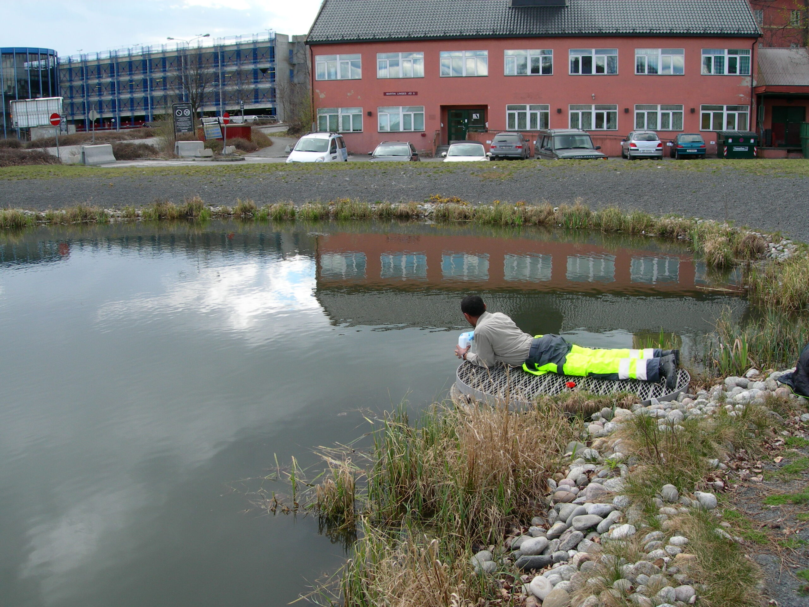

Småbåthavner, spylevann og metallbelastning
Krav til håndtering av spylevann og avrenning skjerpes. Gode løsninger krever både måledata, driftsforståelse og realistisk tiltaksdesign.
Nyheter
Nyhetssiden bygges opp fortløpende. Inntil videre deler vi temaene vi arbeider mest med og gjerne diskuterer med oppdragsgivere.

Krav til håndtering av spylevann og avrenning skjerpes. Gode løsninger krever både måledata, driftsforståelse og realistisk tiltaksdesign.
eDNA gir nye muligheter for å dokumentere tilstedeværelse og påvirkning i vannmiljøer der tradisjonelle metoder alene ikke er nok.
Blågrønne anlegg må dimensjoneres, detaljeres og følges opp slik at de både fungerer hydraulisk og opprettholder naturverdier over tid.
Tidlige miljøavklaringer reduserer usikkerhet i transaksjoner, regulering og prosjektutvikling. Dette gjelder særlig sjønære og historisk belastede arealer.
Vil du ha oppdateringer?
Vi bruker gjerne nyhetssiden også til korte fagnotater og prosjektinnsikt når det er relevant for kunder og samarbeidspartnere.